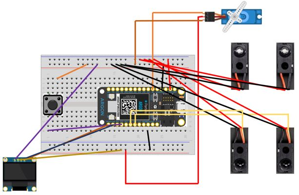
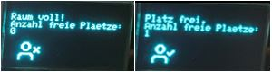

Nachfolgend sind sämtliche Sensoren und Aktoren, welche für
das Projekt eingesetzt wurden, aufgeführt. Ich gebe hierbei
eine kurze Begründung weshalb diese wichtig sind bzw.
eingesetzt werden und wie diese mit dem Argon verbunden
werden.
2.1 Servomotor (Micro Servo WAVGAT SG90) – Schranke
Zur Erstellung einer Schranke benötigt es einen Servomotor.
Der Kopf des Motors bewegt sich bei einer offenen Schranke auf
90 Grad und schliesst sich indem die Position auf null Grad
gesetzt wird. Die Schranke kann per Knopfdruck oder per
Funktion für eine beliebige Anzahl Sekunden geschlossen
werden. Ausserdem schliesst sich die Schranke, wenn das Limit
von 6 Personen erreicht ist. Der Servomotor wird verbunden mit
dem A1-Pin (orange). Auf dem Particle Argon können die Pins
D2-D8 und A0-A5 für einen Servomotor verwendet werden. Hier
wurde Pin A1 für bessere Übersicht und einfacheres
Anschliessen gewählt. Die Stromzufuhr (rot) wurde über den
VBUS Pin gewählt. Dieser Pin ist intern mit dem VBUS des
USB-Ports verbunden. Der Nennausgang sollte etwa 4,5 bis 5 V
betragen, wenn das Gerät an den USB-Port angeschlossen ist,
und 0, wenn es nicht an eine USB-Quelle angeschlossen ist.
Dieser Pin kann wurde gewählt, da die Spannung des 3V3 Pin für
diesen Anwendungsfall nicht ausreichend war. Der Nennstrom des
USB-Ports, der nominell auf 500 mA festgelegt ist, sollte
nicht überschritten werden. Dieser Pin ist mit einer internen
Sicherung geschützt, die auf 1000 mA ausgelegt ist.
Schliesslich wird das dritte Kabel (braun) mit dem GND-Pin
(ground) verbunden. GND ist dort, wo das elektrische Niveau
bei null Volt liegt. Es wird meist als Referenz für alle
anderen elektronischen Bauteile verwendet, denn sie benötigen
einen gemeinsamen Punkt, um korrekt zusammen zu arbeiten.
Damit der Servomotor benutzt werden kann muss ein Servo-Objekt
erstellt werden:
Servo myservo; // create servo object to control a servo
Es wird eine Variable
int position = 90;
deklariert, um später hiermit die Position des Servos
auszulesen. Liegt die Position bei 90 Grad, bedeutet das die
Schranke ist geöffnet. Bei 0 Grad ist die Schranke
geschlossen. Beim Setup wird angegeben, auf welchem Pin sich
der Servo befindet, um mit dem Servo-Objekt zu kommunizieren.
myservo.attach(A1); // attaches the servo on pin A1 to the servo object
Die Position des Servos kann direkt mit einer Zahl oder mit
der Variable «position» festgelegt werden.
myservo.write(position); oder myservo.write(90);
2.2 OLED-Display (SSD1306 128x64 I2C) – Informationsanzeige
Zur Information von Personen, welche den Raum betreten
möchten, wird ein OLED-Display aufgehängt, welches die
wichtigsten Informationen anzeigt.
Wenn die Schranke geschlossen ist, wird «Bitte warten…», die
Anzahl Personen im Raum und ein Icon angezeigt. Bei einer
offenen Schranke wird ebenfalls die Anzahl Personen, ein Icon
und der Text «Bitte eintreten.» angezeigt. I2C, auch als I2C
geschrieben und I-squared-C ausgesprochen, ist eine Methode
zur Kommunikation zwischen Geräten wie Sensoren, Displays und
anderen Peripheriegeräten und einem Mikrocontroller wie dem
Argon. 0,96" OLED I2C-Displays sind preiswert und einfach zu
bedienen. Das gewählte Display ist mit dem SSD1306 kompatibel
und hat eine Auflösung von 128x64 Pixeln.
Die Kommunikation erfordert zwei Leitungen, SDA und SCL. Die
meisten Geräte benötigen außerdem Strom und Masse, so dass in
der Regel vier Leitungen erforderlich sind. In der
I2C-Terminologie ist das Partikel-Gerät (Argon, usw.) das
I2C-Master-Gerät und alle anderen Geräte (Sensoren, Displays
usw.) sind I2C-Slave-Geräte. Die SDA (Daten)-Leitung wird
verwendet, um Daten sowohl zu als auch von den I2C-Geräten zu
senden. Das I2C-Protokoll bestimmt, in welche Richtung Daten
gesendet werden. Die SCL (Takt)-Leitung wird vom Argon
erzeugt, obwohl sie auch bidirektional ist, wenn die
Taktdehnung verwendet wird.
Ganz rechts ist der GND-Pin. Der VCC Pin steht für die
Stromversorgung des Displays. In diesem Falle benötigen wir
wiederum 5V, was wir vom VBUS beziehen, wie vorhin beim
Servomotor. Die SCL und SDA Anschlüsse am Display werden mit
den Pins D0 und D1 verbunden. Auf dem Argon besteht ebenfalls
die Möglichkeit mehrere Displays gleichzeitig zu verbinden, da
hierbei, im Gegensatz zu anderen Particle-Geräten, SCL und SDA
ebenfalls mit den Pins D2 und D3 verbunden werden können.
2.3 Zwei Adafruit IR Break Beam Sensoren
Zur Erkennung und Zählung der Personen, welche den Raum
betreten oder verlassen, werden die beiden IR Break Beam
Sensoren des Lichtschranken-Projekts verwendet. Für den ersten
Sensor wird der D6 Pin und für den zweiten der D5 Pin
verwendet. Wird hierbei also zuerst der Pin D6 durchtrennt und
anschliessend der Pin D5 wissen wir, dass eine Person den Raum
betritt. Dies wiederum erhöht den Counter um 1. Wird zuerst
der Pin D5 und dann D6 durchtrennt, verlässt eine Person den
Raum, was den Counter um 1 verringert. Beides mal wird die
Anzahl Personen laufend auf dem OLED-Display aktualisiert.
2.4 Verkabelung

2.5 Sammlung und Auswertung der Messdaten
Die Ein- und Ausgangsdaten werden, wie unter 2.3 beschrieben,
durch die zwei IR Break Beam Sensoren gesammelt und in einer
«counter» Variable gespeichert. Tritt jemand in den Raum ein
wird dem Counter 1 hinzugefügt. Beim Austritt einer Person
wird vom Counter 1 subtrahiert.
Erreicht der Counter eine Anzahl von 6, was das Limit des MR
Labs ist, schliesst sich die Schranke automatisch. Die
Schranke öffnet sich wieder sobald ein Wert unter 6 erreicht
wurde.
Auch das OLED-Display reagiert auf die im Counter angegebene
Anzahl Personen. Sobald 6 Personen erreicht werden, hat es im
MR Lab keinen Platz mehr. Das OLED-Display, welches vor dem
Zimmer SW329 angebracht werden soll, signalisiert somit
jederzeit wie viel Freie Plätze es im Raum hat. Dabei wird die
im Counter Anzahl von der Maximalanzahl an Personen abgezogen.
display.println(6-counter);

Das gleiche Resultat kann erreicht werden durch das Drücken
des Knopfes. Wird der Knopf gehalten schliesst die Schranke
und das OLED-Display zeigt an, dass der Raum voll ist.
Events werden auf dem Frontend direkt in einer Tabelle
gesammelt und können sogleich exportiert und analysiert
werden.